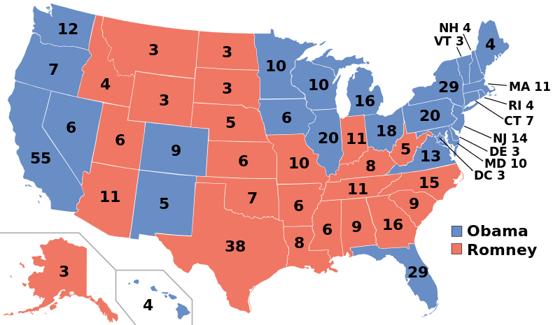
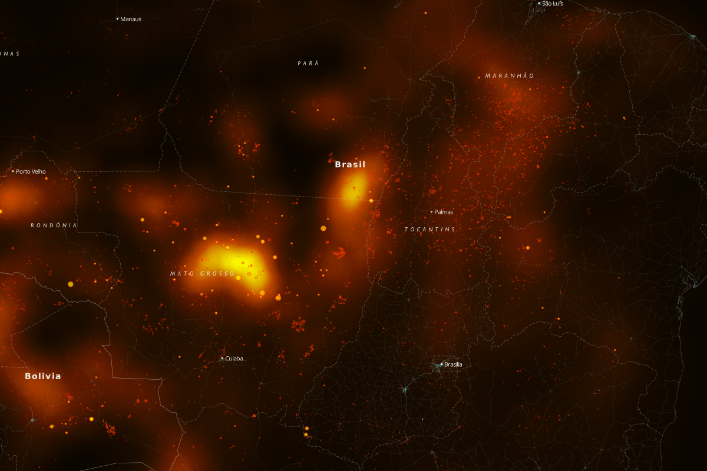
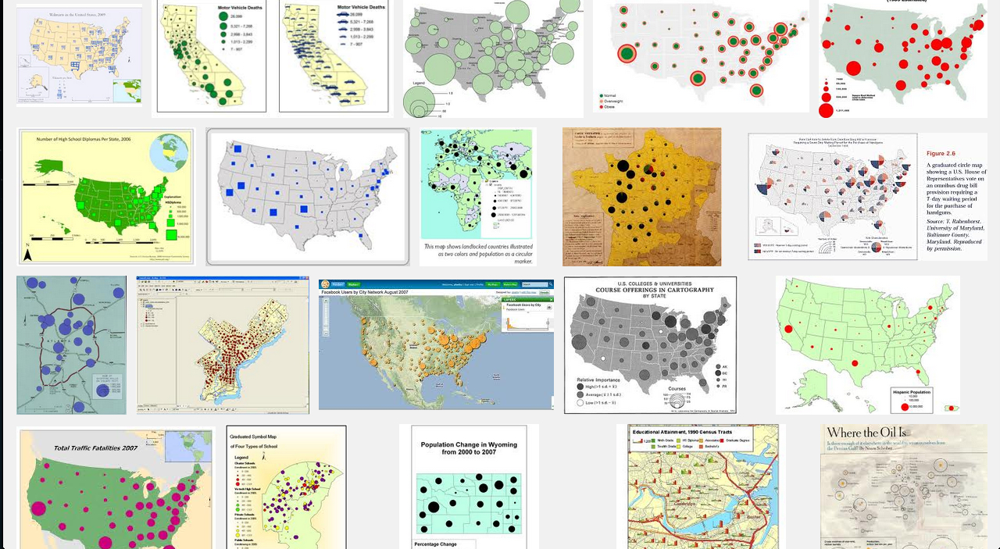
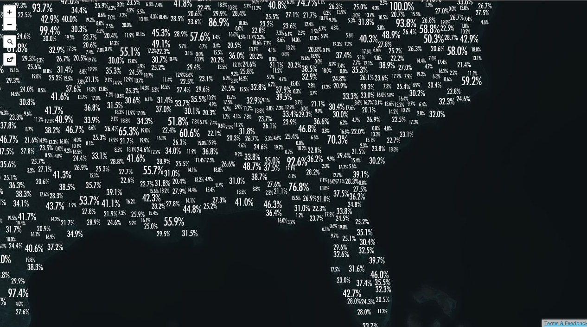
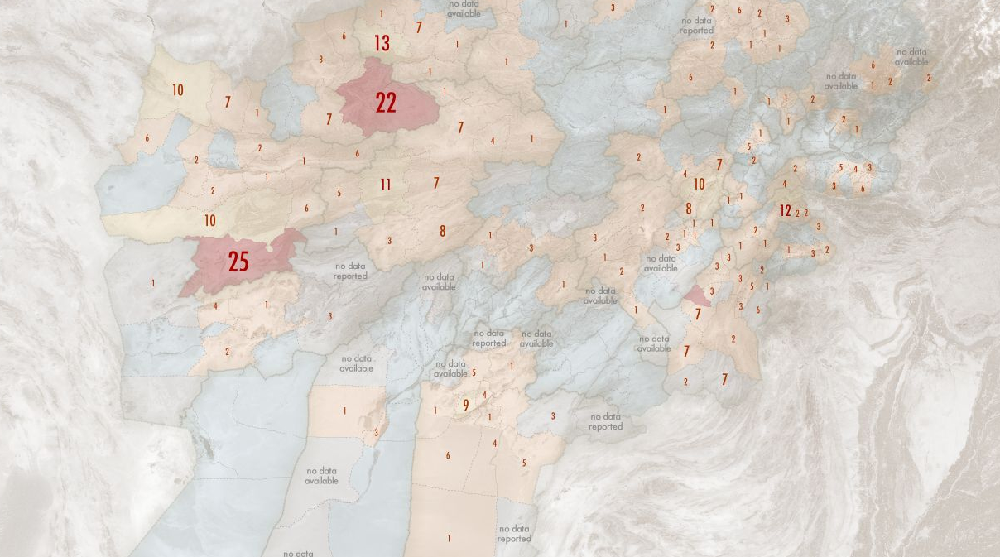
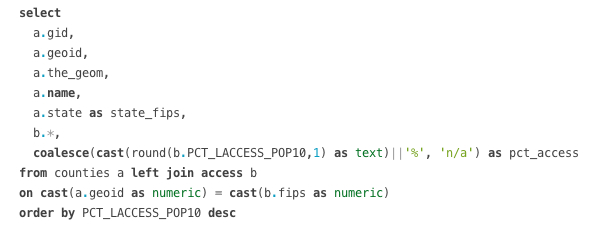

scaled
data
design
but really:
alternative techniques for thematic mapping with TileMill
(i suck at naming things)
make maps get money
make really
pretty maps
make really
dumb maps
thematic mapping:
some data, disperesed over an area
options
choropleth

heatmap

or dots

yall.
dots are kinda meh.
:(
scaled
data
desgin!


zero abstraction
richly interactive
big things are big
small numbers: don't care
we have the internet
all the zoom levels
big things are first
draw big things first
painter's algo
SQL

order by your_data desc
CartoCSS
text-allow-overlap: false;
SQL for pretty maps
coalesce(cast(round(your_data,1) as text)||'%', 'n/a') as your_data_but_prettier
round(your_data,1) as your_data_but_prettier
round(your_data,1)||'%' as your_data_but_prettier
nope.
cast(round(your_data,1) as text)||'%' as your_data_but_prettier
0% = lame
coalesce(cast(round(your_data,1) as text)||'%', 'n/a') as your_data_but_prettier
limitations
locating stuff
data is not created equal
thx!
@ian_villeda
villeda@mapbox.com